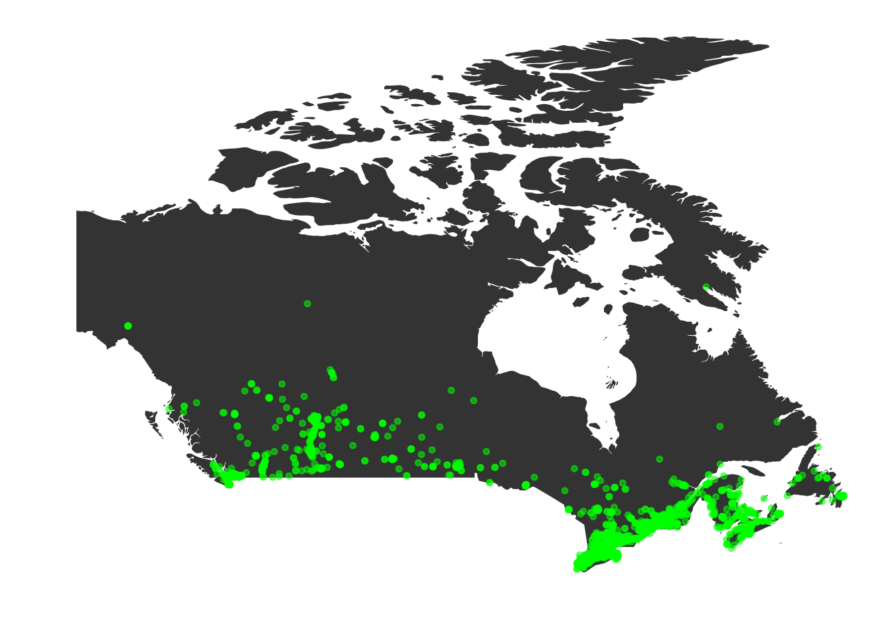

![]()
options(stringsAsFactors=F)
require(timmysDensity)
require(plyr)
require(maps)
require(ggplot2)
require(geosphere)Inspired by this post, I wanted to examine the locations and density of Tim Hortons restaurants in Canada. Using Stats Canada data, each census tract is queried on Foursquare for Tims locations.
Setup
Statistics Canada Census Data
The actual Statistics Canada data at the dissemination block level can be downloaded from here. You will want to download the Excel format, read it, and then save it as either tab-delimited or CSV using a non-standard delimiter, I used a semi-colon (;).
censusData <- read.table("../timmysData/2011_92-151_XBB_XLSX.csv", header=F, sep=";", quote="")
censusData <- censusData[,1:17]
names(censusData) <- c("DBuid", "DBpop2011", "DBtdwell2011", "DBurdwell2011", "DBarea", "DB_ir2011", "DAuid", "DAlamx", "DAlamy", "DAlat",
"DAlong", "PRuid", "PRname", "PRename", "PRfname", "PReabbr", "PRfabbr")
censusData$DBpop2011 <- as.numeric(censusData$DBpop2011)
censusData$DBpop2011[is.na(censusData$DBpop2011)] <- 0
censusData$DBtdwell2011 <- as.numeric(censusData$DBtdwell2011)
censusData$DBtdwell2011[is.na(censusData$DBtdwell2011)] <- 0From this data we get block level:
- populations (DBpop2011)
- total private dwellings (DBtdwell2011)
- privale dwellings occupied by usual residents (DBurdwell2011)
- block land area (DBarea)
- dissemination area id (DAuid)
- representative point x coordinate in Lambert projection (DAlamx)
- rep. point y coordinate in Lambert projection (DAlamy)
- rep. point latitude (DAlat)
- rep. point longitude (DAlong)
This should be everything we need to do the investigation we want.
Dissemination Area Long. and Lat.
We need to find the unique dissemination areas, and get out their latitudes and longitudes for querying in other databases. Note that the longitude and latitude provided here actually are weighted representative locations based on population. However, given the size of them, I don’t think using them will be a problem for Foursquare. Because areas are what we have location data for, we will summarize everything at the area level, summing the population counts for all the blocks within an area.
uniqAreas <- unique(censusData$DAuid)
summarizeArea <- function(areaID){
areaData <- censusData[(censusData$DAuid == areaID),]
outData <- data.frame(uid=areaID, lamx=areaData[1,"DAlamx"], lamy=areaData[1,"DAlamy"], lat=areaData[1,"DAlat"], long=areaData[1,"DAlong"], pop=sum(areaData[,"DBpop2011"]), dwell=sum(areaData[,"DBtdwell2011"]), prov=areaData[1, "PRename"])
return(outData)
}
areaData <- adply(uniqAreas, 1, summarizeArea)
.sessionInfo <- sessionInfo()
.timedate <- Sys.time()
write.table(areaData, file="../timmysData/areaData.txt", sep="\t", row.names=F, col.names=T)
save(areaData, .sessionInfo, .timedate, file="../timmysData/areaDataFile.RData", compress="xz")Run queries on Foursquare
Load up the data and verify what we have.
load("../timmysData/areaDataFile.RData")
head(areaData)Generate queries and run
For each dissemination area (DA), we are going to use as the location for the query the latitude and longitude of each DA, as well as the search string “tim horton”.
Because Foursquare limits the number of userless requests to 5000 / hr. To make sure we stay under this limit, the runQueries function will only 5000 queries an hour.
runQueries(areaData, idFile="../timmysData/clientid.txt", secretFile="../timmysData/clientsecret.txt", outFile="../timmysData/timmysLocs2.txt")Clean up the results
Due to the small size of the DAs, we have a lot of duplicate entries. Now lets remove all the duplicate entries.
cleanUpResults("../timmysData/timmysLocs2.txt")Visualize Locations
First lets read in the data and make sure that we have Tims locations.
# read in and clean up the data
timsLocs <- scan(file="../timmysData/timmysLocs2.txt", what=character(), sep="\n")
timsLocs <- strsplit(timsLocs, ":")
timsName <- sapply(timsLocs, function(x){x[1]})
timsLat <- sapply(timsLocs, function(x){x[2]})
timsLong <- sapply(timsLocs, function(x){x[3]})
locData <- data.frame(description=timsName, lat=as.numeric(timsLat), long=as.numeric(timsLong))
hasNA <- is.na(locData[,"lat"]) | is.na(locData[,"long"])
locData <- locData[!(hasNA),]
timsStr <- c("tim hortons", "tim horton's")
hasTims <- (grepl(timsStr[1], locData$description, ignore.case=T)) | (grepl(timsStr[2], locData$description, ignore.case=T))
locData <- locData[hasTims,]
timsLocs <- locData
rm(timsName, timsLat, timsLong, hasNA, locData, hasTims, timsStr)
.timedate <- Sys.time()
.sessionInfo <- sessionInfo()
save(timsLocs, .timedate, .sessionInfo, file="../timmysData/timsLocs.RData", compress="xz")Put them on a map
data(timsLocs)
data(areaDataFile)
canada <- map_data("world", "canada")
p <- ggplot(legend=FALSE) +
geom_polygon( data=canada, aes(x=long, y=lat,group=group)) +
theme(panel.background = element_blank()) +
theme(panel.grid.major = element_blank()) +
theme(panel.grid.minor = element_blank()) +
theme(axis.text.x = element_blank(),axis.text.y = element_blank()) +
theme(axis.ticks = element_blank()) +
xlab("") + ylab("")
sp <- timsLocs[1, c("lat", "long")]
p2 <- p + geom_point(data=timsLocs[,c("lat", "long")], aes(x=long, y=lat), colour="green", size=1, alpha=0.5)
print(p2)
How far??
And now lets also calculate the minimum distance of a given DA from Timmys locations.
queryLocs <- matrix(c(timsLocs$long, timsLocs$lat), nrow=nrow(timsLocs), ncol=2, byrow=F) # these are the tims locations
distLocs <- matrix(c(areaData$long, areaData$lat), nrow=nrow(areaData), ncol=2, byrow=F) # the census centers
allDists <- apply(queryLocs, 1, function(x){
min(distHaversine(x, distLocs)) # only need the minimum value to determine
})From the allDists variable above, we can determine that the maximum distance any census dissemination area (DA) is from a Tim Hortons is 51.5 km (31.9815 miles). This is based on distances calculated “as the crow flies”, but still, that is pretty close. Assuming roads, the furthest a Canadian should have to travel is less than an hour to get their Timmys fix.
totPopulation <- sum(areaData$pop, na.rm=T)
lessDist <- seq(50, 51.6 * 1000, 50) # distances are in meters, so multiply by 1000 to get reasonable km
percPop <- sapply(lessDist, function(inDist){
isLess <- allDists < inDist
sum(areaData$pop[isLess], na.rm=T) / totPopulation * 100
})
plotDistPerc <- data.frame(distance=lessDist, population=percPop, logDist=log10(lessDist))
ggplot(plotDistPerc, aes(x=logDist, y=population)) + geom_point() + xlab("Log10 Distance") + ylab("% Population")
What gets really interesting, is how much of the population lives within a given distance of a Timmys. By summing up the percentage of the population within given distances. The plot above shows that 50% of the population is within 316.227766 meters of a Tim Hortons location.
I guess Canadians really do like their Tim Hortons Coffee (and donuts!).
Replication
All of the necessary processed data and code is available in the R package timmysDensity. You can install it using devtools. The original data files are linked in the relevant sections above.
library(devtools)
install_github('timmysDensity', 'rmflight')Caveats
I originally did this work based on a different set of data, that I have not been able to locate the original source for. I have not compared these results to that data to verify their accuracy. When I do so, I will update the package, vignette and blog post.
Posted
This work exists as the vignette of timmysDensity, on my web-blog, and independently as the front page for the GitHub repo.
Disclaimer
Tim Hortons was not involved in the creation or preparation of this work. I am not regularly updating the location information obtained from Foursquare, it is only valid for May 31, 2013. All code used in preparing these results was written by me, except in the case where code from other R packages was used. All opinions and conclusions are my own, and do not reflect the views of anyone else or any institution I may be associated with.
Reuse
Citation
BibTeX citation:
@online{mflight2013,
author = {Robert M Flight},
title = {Tim {Hortons} {Density}},
date = {2013-06-05},
url = {https://rmflight.github.io/posts/2013-06-05-tim-hortons-density},
langid = {en}
}
For attribution, please cite this work as:
Robert M Flight. 2013. “Tim Hortons Density.” June 5, 2013.
https://rmflight.github.io/posts/2013-06-05-tim-hortons-density.